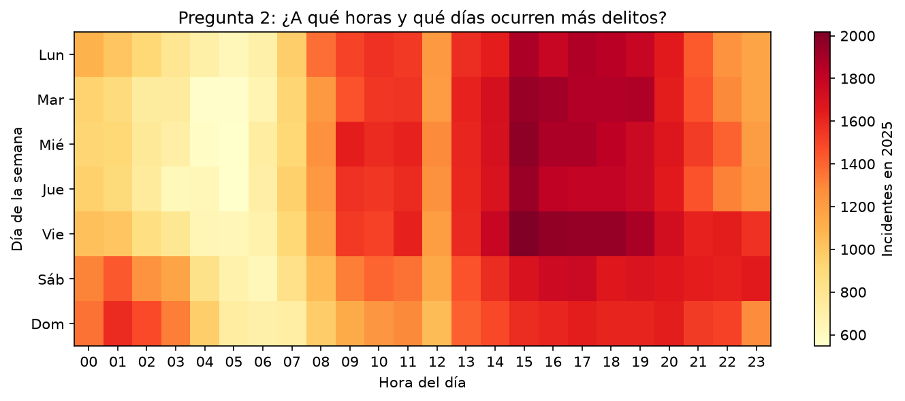
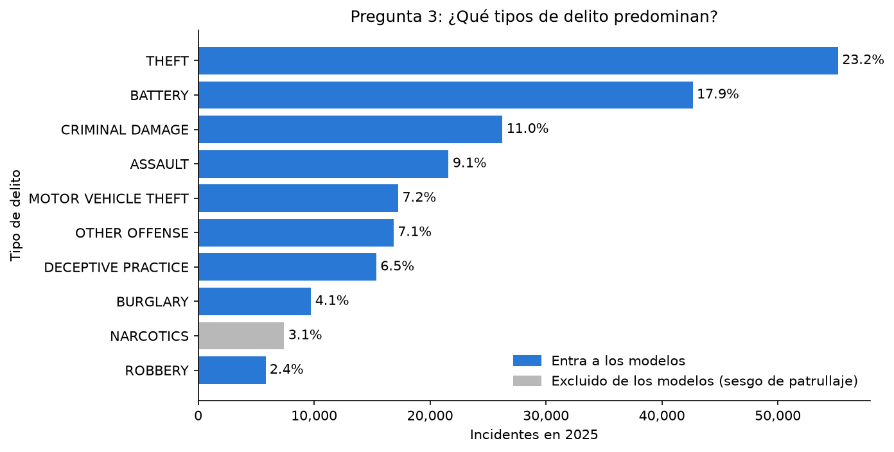
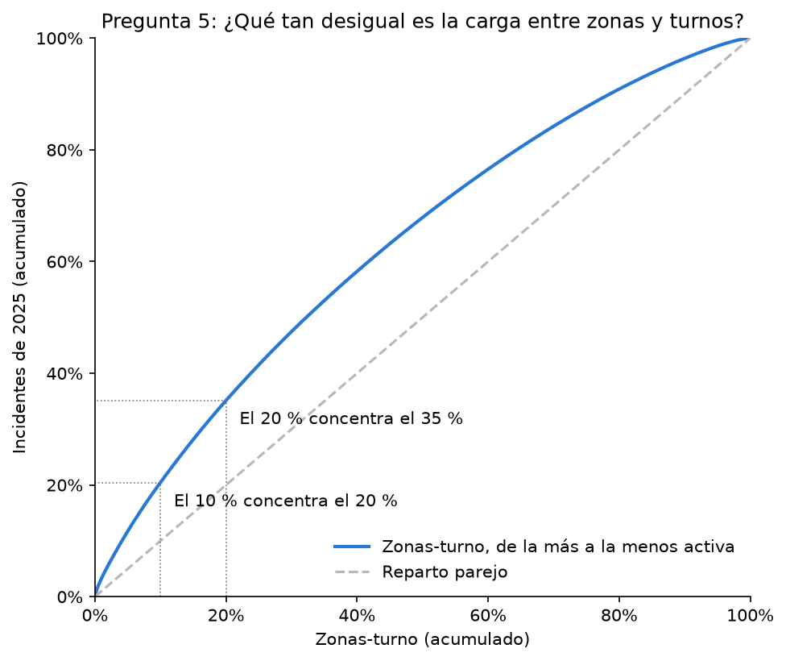

Predecimos cuántos incidentes habrá la próxima semana en cada zona de patrullaje y bloque de 6 horas, con un clúster de Hadoop y Spark en AWS.
Valentino De Paola Gallardo · Carlos David Gonzalez Davila · Eduardo Lopez Uresti
La pregunta de negocio
¿A qué zonas y turnos conviene mandar más patrullas la próxima semana?
Para quién
El mando policial que reparte las patrullas cada semana. Necesita saber dónde y cuándo, y qué tipo de delito esperar.
Qué predecimos
Los incidentes de la próxima semana en cada zona-turno: un beat (zona de patrullaje) en un bloque de 6 horas.
Cómo lo medimos
Además del error, la captura: qué parte de los incidentes cae en el 10 % de zonas-turno que señala el modelo.
274 beats × 4 turnos = 1,096 zonas-turno. Cada semana se señalan 110.
Datos y arquitectura
Un millón de incidentes en un data lake de tres capas
1,002,283incidentes de 2022 a 2025
274beats en el modelo
208semanas de historia
10semanas de prueba (oct. a dic. de 2025)
raw
Ingesta
El CSV de cada año del portal de datos abiertos, tal cual, en HDFS.
processed
Limpieza
Fechas en UTC, nulos, duplicados y coordenadas fuera de Chicago.
curated
Features
Malla beat × turno × semana con ceros y las semanas anteriores.
SparkML
Modelos
Random Forest, GBT y regresión logística.
vista
Resultados
Gráficas y esta presentación, que solo lee agregados.
AWS EC2 con TerraformHadoop 3.5 HDFS y YARNSpark 4.2 PySpark y SparkMLHive catálogo de tablasJupyterLab por túnel SSH
Pregunta 1 · ¿Dónde?
El delito se concentra en el centro, el oeste y el sur
35.6 %
de los incidentes cae en el 10 % de las celdas de 500 m.
Los distritos con más actividad son el 8, 12, 1, 6 y 18.
Pregunta 2 · ¿Cuándo?
Por la tarde entre semana y de madrugada el fin de semana

El pico es a las 15:00, y de 15:00 a 19:00 entre semana. El sábado y el domingo sube la madrugada. El 60.7 % ocurre entre el mediodía y la medianoche.
Pregunta 3 · ¿Qué tipo?
Tres tipos de delito suman más de la mitad

Robo sin violencia: 23.2 %
Agresión física: 17.9 %
Daño a la propiedad: 11.0 %
Dejamos fuera de los modelos narcóticos y armas: dependen más de dónde patrulla la policía que de dónde ocurren.
Pregunta 4 · ¿Cómo cambia en el año?
Más delitos en verano, y 2025 fue un año más bajo
En verano hay 9 % más incidentes. 2023 y 2024 tuvieron más que 2025, así que promediar toda la historia sobreestima el final de 2025: lo que más anticipa una zona es su nivel reciente.
Pregunta 5 · ¿Qué tan desigual?

Pocas zonas-turno cargan buena parte del trabajo
20.4 %
de los incidentes cae en el 10 % de zonas-turno más activas.
La mitad menos activa junta el 32.1 %. Por eso tiene sentido señalar unas cuantas zonas-turno cada semana.
Modelos · Fase 3
Random Forest le gana a la línea base, pero no al promedio histórico
Modelo (datos de 2025)
RMSE
MAE
R²
Captura
PAI
Promedio histórico de la zona-turno
2.101
1.614
0.372
20.0 %
2.00
Random Forest (elegido)
2.117
1.642
0.363
19.8 %
1.98
GBT
2.132
1.655
0.354
19.8 %
1.98
Promedio de 4 semanas (línea base de la Fase 2)
2.259
1.722
0.275
19.0 %
1.90
Elegimos Random Forest porque se equivoca menos que GBT en las 10 semanas de prueba y entrena en un tercio del tiempo. Pero la variable que más pesa es el propio promedio histórico, y solo no lo supera.
Después de la Fase 3
Con cuatro años y variables nuevas, el modelo por fin le gana
Más historia (2022 a 2025) sola no basta: promediar años con más delitos empeora todo.
Lo que ayudó: el promedio de las últimas 52 semanas, la semana del año, los beats vecinos y los festivos.
Random Forest con esas variables le gana al promedio histórico en las 10 semanas de prueba.
Aun así, la regla simple de 52 semanas queda a solo 0.024 de error.
Error absoluto medio (MAE) en incidentes por zona-turno, semanas 42 a 51 de 2025. Menos es mejor.
Demo
Lo que predijo el modelo contra lo que pasó
Impacto en patrullaje
Con el 10 % de las zonas-turno se cubre el doble de incidentes que al azar
Cada semana el modelo señala 110 de 1,096 zonas-turno.
Ahí caen en promedio 752 incidentes por semana (19.8 %), contra 379 si se eligieran al azar: un PAI de 1.98.
Ni sabiendo el futuro se pasa de 987 (26 %). La meta de la Fase 2 (40 %) no se alcanza con esta unidad de análisis: habría que usar zonas más chicas o bloques de horas más cortos.
Promedio de las semanas 42 a 51 de 2025, con Random Forest de la Fase 3. En total hubo 3,792 incidentes por semana en las zonas del modelo.
¿Qué tipo de delito esperar?
Se anticipa la mezcla de cada zona, no el incidente suelto
Clasificador (7 clases)
Exactitud
Top 2
Regresión logística
29.4 %
48.5 %
Random Forest
29.3 %
48.5 %
Tipo más frecuente de la zona-turno
29.1 %
48.9 %
Tipo más común de la ciudad
24.6 %
44.0 %
Ningún clasificador le gana a la regla de la zona-turno. Pero la mezcla de tipos de cada zona se anticipa con un error de 4.7 puntos, contra 6.4 si se usa la de la ciudad. Eso sirve para decidir qué tipo de patrullaje mandar.
Conclusiones
Lo que aprendimos
El nivel reciente de cada zona es lo que más predice. Las reglas simples bien elegidas son difíciles de superar, y hay que compararse siempre contra ellas.
El modelo sí ayuda a repartir patrullas: duplica lo que se cubriría al azar y llega al 76 % de lo que lograría un modelo perfecto.
Las metas deben ajustarse a la unidad de análisis. Con beats y turnos de 6 horas, el máximo posible es 26 % de captura.
El tipo de delito depende de dónde. La mezcla de la zona responde mejor que cualquier clasificador.
Big Data a escala de una sola máquina: un clúster pseudo-distribuido en AWS alcanzó para un millón de registros y cuatro años de historia.
Próximos pasos
Qué seguiría
Un pronóstico del clima real, que en la prueba optimista bajó el error a 1.574.
Zonas más chicas o turnos más cortos, para que la captura pueda acercarse a la meta.
Ingesta y reentrenamiento automáticos cada semana, con MLflow para registrar los modelos.
Una API que reciba beat y turno y devuelva la predicción.